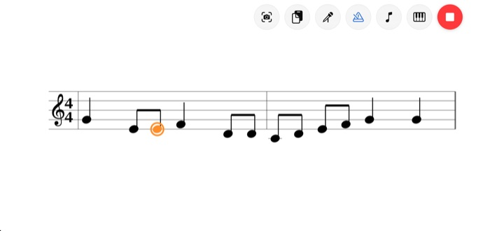
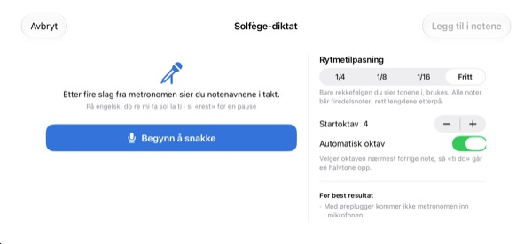
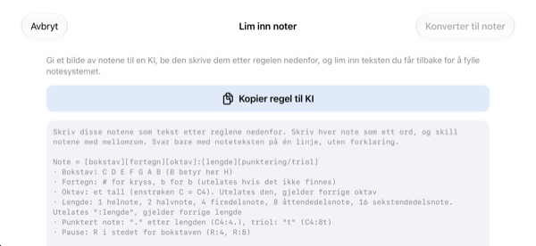

Slutt å telle i hodet.
Hør det heller.
Skriv inn de to taktene du snubler i, og trykk på spill av. Etter én takts inntelling spiller appen dem til metronomen, med nøyaktig den rytmen og tonehøyden som står.
Alle funksjoner er gratis. For iPhone og iPad.

Skriv noen noter og lytt
Hold fingeren på notesystemet og dra opp eller ned for å bytte tone, og slipp for å sette noten. Trykk på Spill, så hører du det etter én takts inntelling. Det kommer lyd, så sjekk volumet.
Mistet tellingen midt i takten igjen?
En punktert åttendedel, så en sekstendedel og rett etter en triol. Du banker takten på kneet, og et sted midt i går det i surr. Kvelden før korøvelsen er det sjelden et piano i nærheten heller. I StaffSinger holder det å skrive inn de to taktene, så hører du nøyaktig rytme og tonehøyde.
Rytme og tonehøyde akkurat som det står
Etter én takts inntelling spiller musikken til metronomens klikk, og noten som klinger, lyser oransje. Tempoet går fra 40 til 200 BPM, og taktarten kan være 4/4, 3/4, 2/4, 6/8, 2/2 eller 3/8.
Noter på samme slag klinger sammen som en akkord, og du kan skrive opptil tre stemmer. G-nøkkel, altnøkkel, F-nøkkel og faste fortegn er med.

Si notenavnene, så blir de noter
Etter fire klikk fra metronomen sier du do re mi i takt, og notene havner i notesystemet. Treffer du slaget, kommer noteverdien med også, som firedeler, åttendedeler eller sekstendedeler. For pause sier du rest.
Si notenavnene på engelsk. Talen gjenkjennes bare på enheten og lagres ikke.

Gi notebildet til en KI og lim inn svaret
Trykk på Kopier regel til KI, gi den til en KI sammen med et bilde av notene, og lim inn teksten du får tilbake. Notesystemet fylles ut av seg selv. Formatet står i tabellen nedenfor.
Du kan også ta bilde av papirnotene, ha det på skjermen og skrive av mens du ser på.

Kom i gang i tre trinn
- 1
Velg de vanskelige taktene
Appen åpner med et tomt notesystem på to takter.
- 2
Skriv notene
Trykk i notesystemet, eller spill på pianotangentene.
- 3
Trykk på spill av
Inntelling, så avspilling med metronom.
Tekstformat for innliming
- C4:4
- C i oktav 4, firedel (enstrøken c er C4)
- D:8
- Uten oktav gjelder den forrige
- F#4:8 · Bb4:4
- # for kryss, b for b
- E4
- Uten :noteverdi gjelder den forrige
- :1 · :2 · :4 · :8 · :16
- helnote, halvnote, firedel, åttendedel, sekstendedel
- C4:4.
- punktert note
- C4:8t
- triol
- R:4 · R:8
- pauser
Kopier regel til KI i appen kopierer nøyaktig disse instruksjonene. Skill notene med mellomrom.
Alle funksjoner er gratis
Gratis
- Innskriving i notesystemet og piano på to oktaver
- Avspilling med inntelling og metronom
- Akkorder og tre stemmer
- Faste fortegn og tre nøkler
- Diktering av notenavn med stemmen
- Lim inn tekst og referansebilde
Støtt utvikleren
- Send litt tips fra Innstillinger
- Tips låser ikke opp noe ekstra
Ikke et abonnement. Hvert tips er en engangsbetaling.
Ingen reklame og ingen konto.
Vanlige spørsmål
Hvordan legger jeg inn noter?
Velg først noteverdi i verktøylinjen, og trykk så i notesystemet på høyden du vil ha. Mens du holder, hører du tonen, og når du slipper, settes noten inn. Med tastaturknappen åpner du et piano på to oktaver.
Hvordan lager jeg en akkord?
Slå på Akkord-knappen i verktøylinjen og legg til noter. De stables oppå den valgte noten og klinger samtidig.
Hvordan retter jeg en note?
Dra noten opp eller ned for å endre tonehøyde, eller sidelengs for å flytte den til et annet slag. Med en note valgt flytter ♯ ♭ den et halvt tonetrinn og 8va en oktav.
Hvor endrer jeg tempo og taktart?
I Innstillinger, sammen med nøkkel og faste fortegn. Der slår du også metronom og inntelling av og på.
Det kommer ingen lyd.
Sjekk lydløs modus og medievolumet. Hvis det bare er metronomen som mangler, se etter at den er slått på under Avspillingshjelp i Innstillinger.
Dikteringen blander notene.
Bruk øreplugger så metronomen ikke lekker inn i mikrofonen, og si én note tydelig per slag. En feil note drar du bare på plass.
Hvorfor trenger appen kameraet?
Bare for å ta bilde av papirnoter du har på skjermen som referanse. Bildene forlater aldri enheten. Uten kameratilgang kan du velge et bilde fra biblioteket.
Hvilke enheter virker den på?
iPhone og iPad med iOS 17 eller nyere. Grensesnittet er laget for liggende format.
Blir notene eller stemmen min sendt noe sted?
Nei. Noter, bilder og stemme blir på enheten, og alt virker uten internett. Bare anonym bruksstatistikk og krasjrapporter sendes til iCloud for å forbedre appen.
Hvordan tar jeg kontakt?
Skriv til leeo@kakao.com, svaret kommer vanligvis innen 2–3 virkedager. Feil og ideer tas også imot som issues på GitHub: M1zz/StaffSinger.
Spørsmål eller tilbakemeldinger? Skriv til leeo@kakao.com.